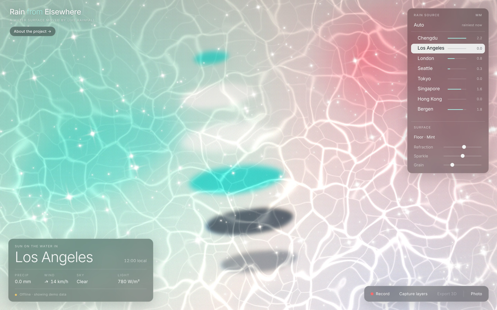
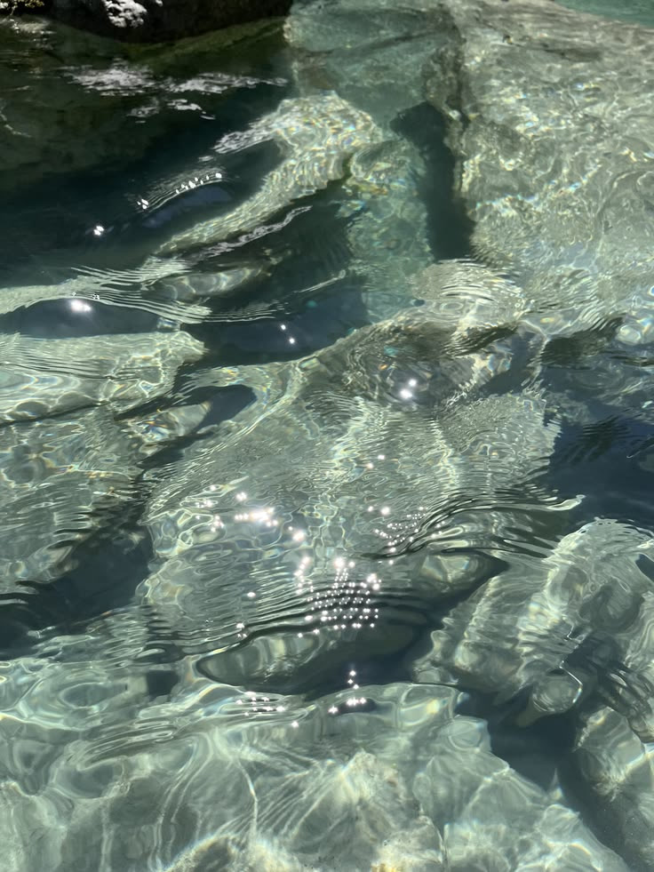
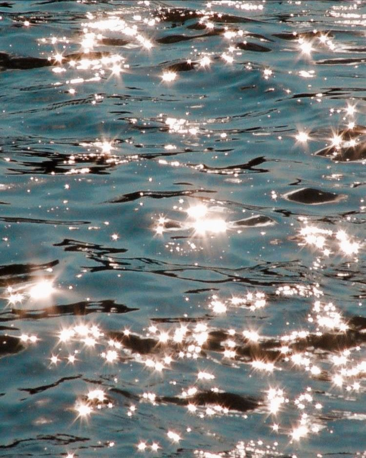
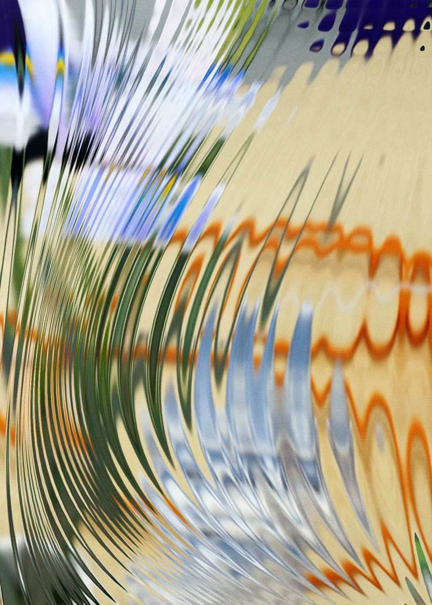
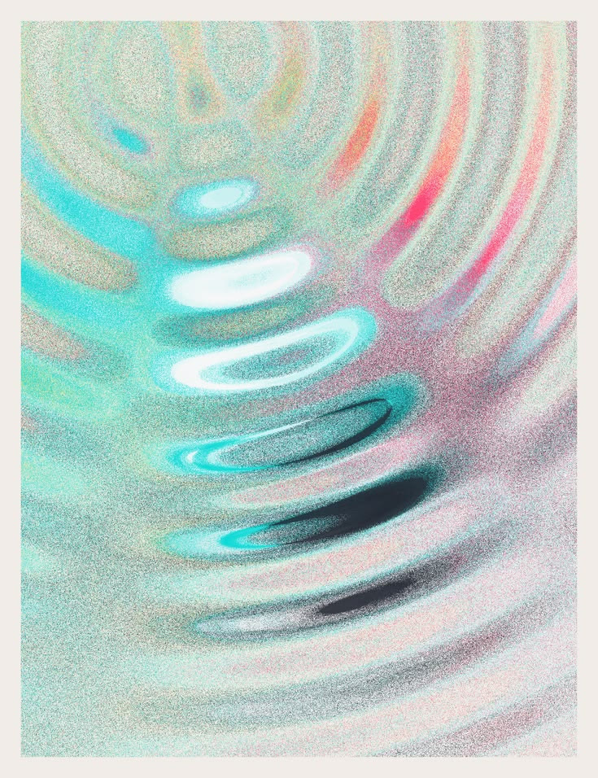
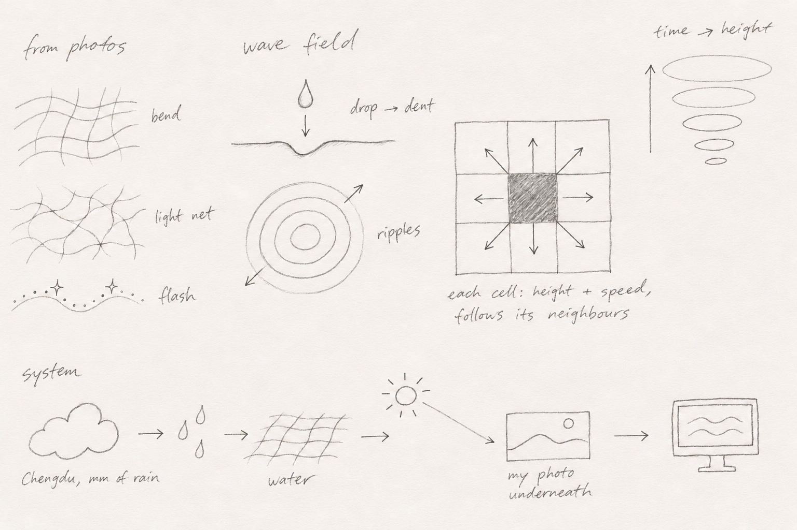
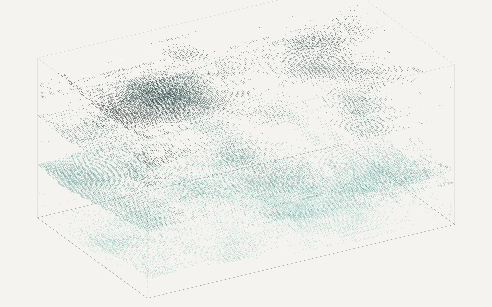
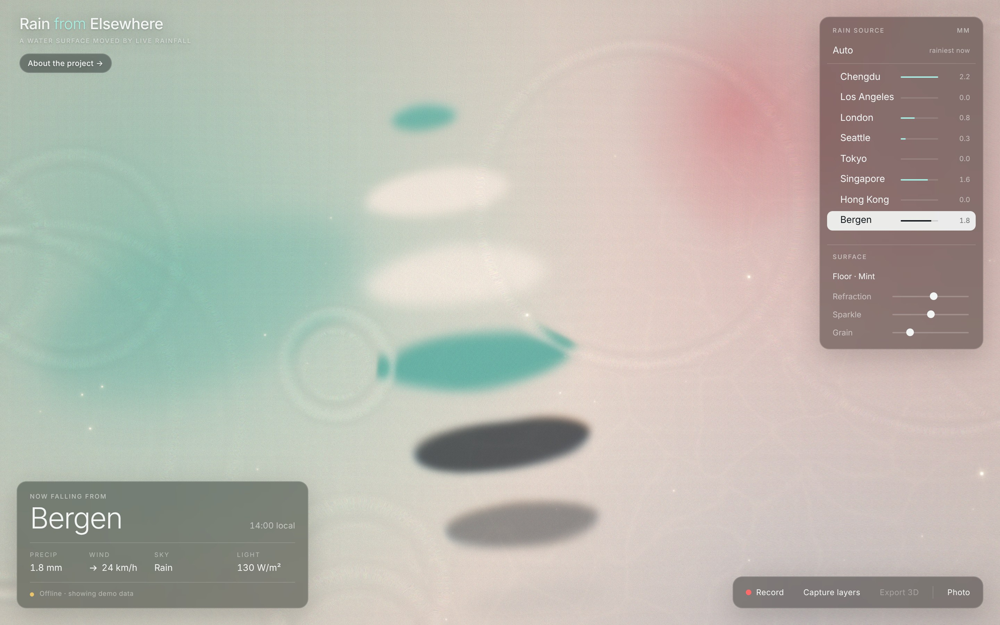
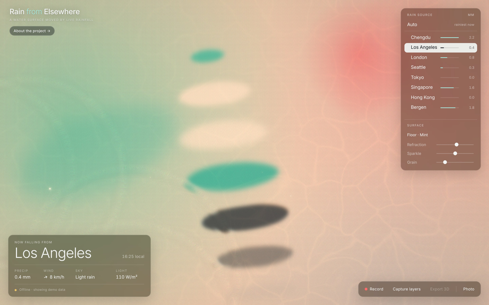
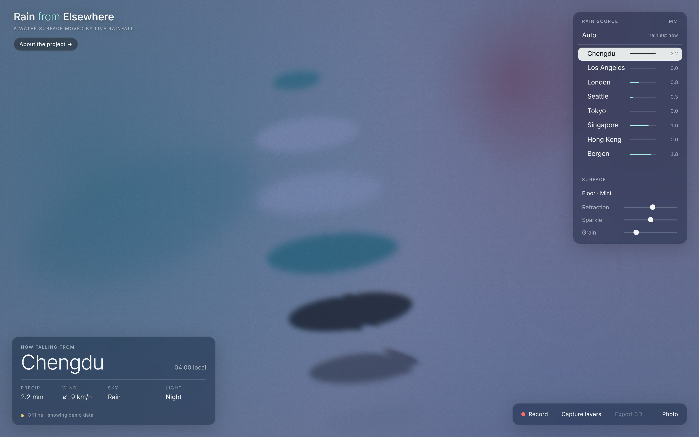

CT3 · Week 5 · Simulation · Jia Yang
I made a water surface that reacts to the real weather in another city. It barely rains in LA, so I mostly watch Chengdu, where I'm from. There's also an Auto mode that jumps to whichever city has the most rain right now.
Open the water →
I started with two photos I took. In both of them you can barely see the water itself. What stands out is the rocks looking bent, the lines of light on the bottom, and the sparkles on top, so that's what I tried to simulate.




I tried a couple of other ideas first, an erosion sim and a cell growing thing, but they felt more like diagrams than water.
In the end I went with a wave simulation. Ripples come out of it on their own, and the bending, the light lines and the sparkles can all be worked out from the shape of the water.

The water is a grid. Every cell has a height and a speed, and keeps moving toward the average of the cells around it, which is what makes waves spread out.
Raindrops get dropped in depending on how much it's raining in the city. Then the slope of the water is used to bend the image underneath and to place the light lines and sparkles.
Field: the water · Texture: the image underneath · Agents: raindrops and sparkles
You can pick from eight cities, or let Auto choose.
Live weatherrain, wind, clouds, sunlight
The city's timewhere the sun is, day or night
My handclick or drag the water
Screen or projectionwith the city and weather in a corner
Videopress R
3D objecttime as height, press L then E
When you capture, the ripples get saved as layers and stacked on top of each other, so you can see a few seconds of rain at once. Each drop leaves a column of rings that get wider as they go up.

render of the exported .objThis is the same screen at different times and in different weather. The light follows the actual sun position in each city, so nights get dark and sunsets get warm.
For the video and these screenshots I typed in the weather myself so I could show a few cities at once (that's why it says demo data). Normally it uses live data.


